How to play
Play a match with a partner while learning how Git records and shares changes.
One move and repeat
Step 1: Invite your partner
Do this once, at the start. X owns the repository; O is the partner. Both of you need a GitHub account.
X (owner):
- Open your repository on GitHub. Open More and select Settings.
- In the sidebar, select Collaborators (some pages call it Manage access). Before anyone is invited, the page can still say you have not invited any collaborators.
- Scroll down until Add people is fully visible, select it, and type your partner’s GitHub username.
- Select the person marked Invite collaborator, then select Add … to this repository. After you choose someone, GitHub may label that button Add <username>. This sends the invitation. The Collaborators page then shows a pending invite (Awaiting their response, marked Pending Invite).
On your repository, open More and select Settings.
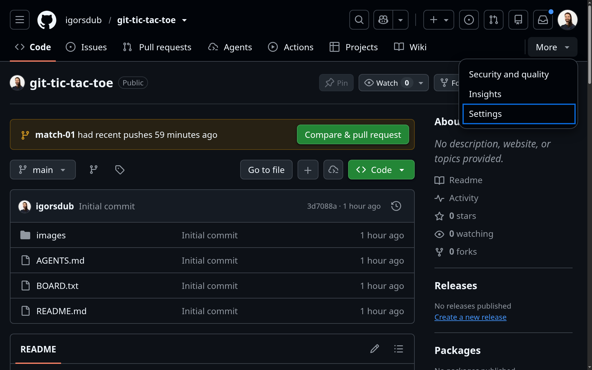
In the sidebar, select Collaborators. This is the landing page: it can still show no collaborators, and Add people may only peek in at the bottom.
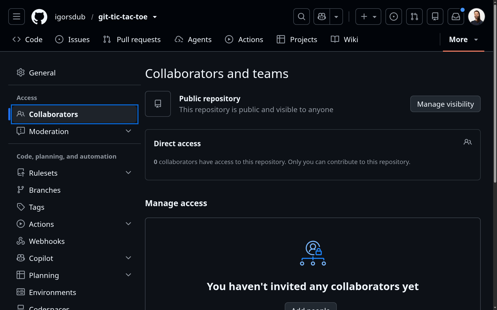
Scroll down until Add people is fully visible, then select it. The page still says you have not invited any collaborators.
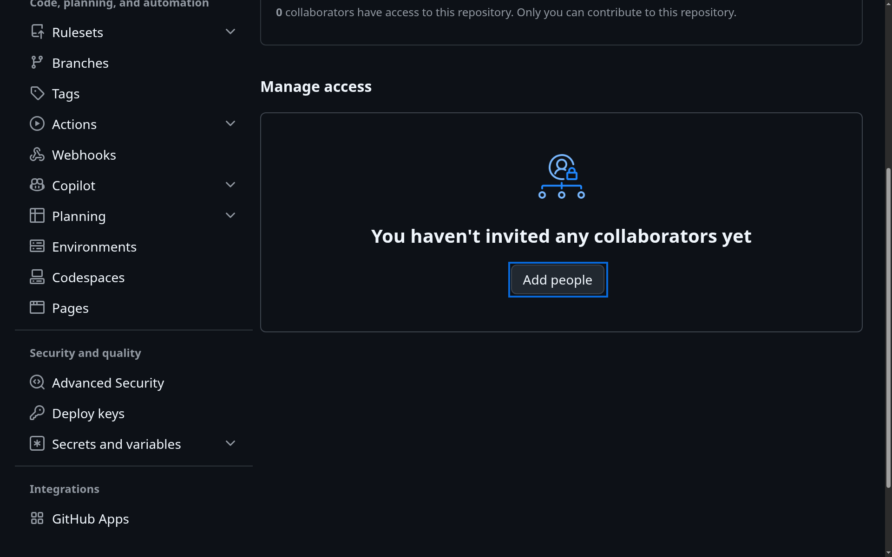
Type your partner’s GitHub username. The example here is viyuetuki.
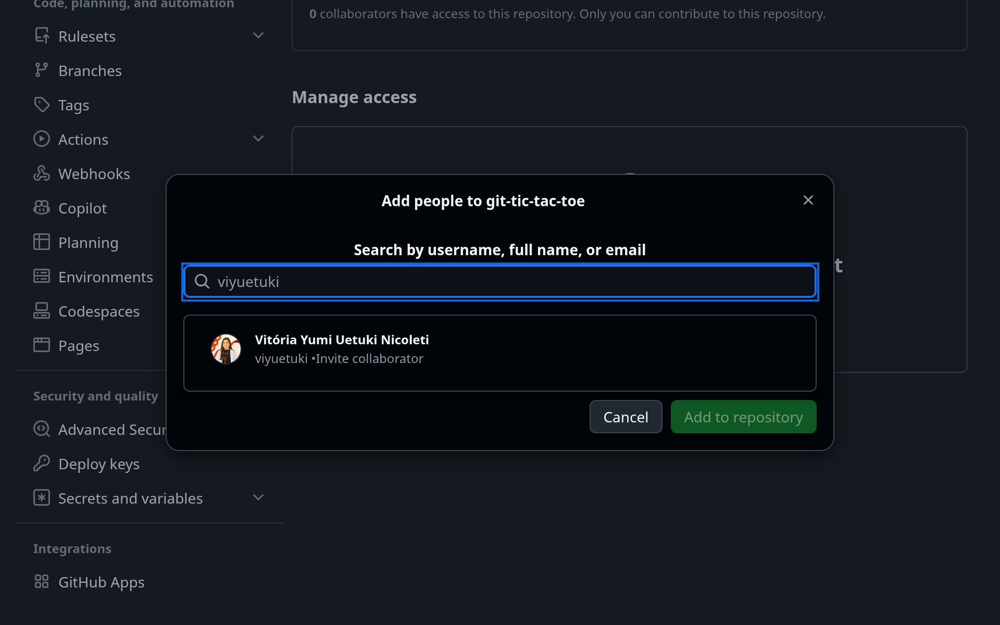
Select the result labelled Invite collaborator for that person.
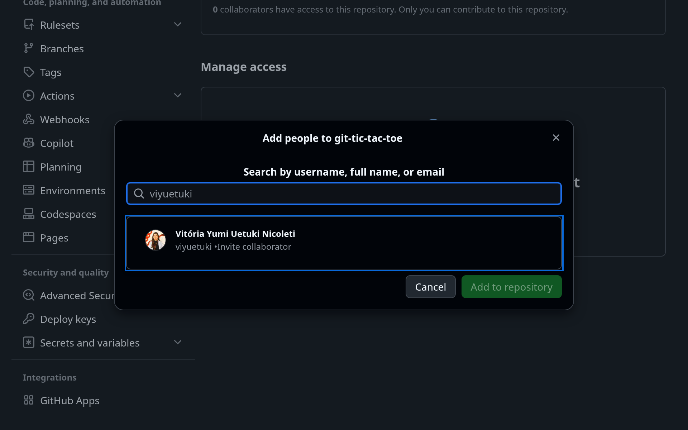
Select Add … to this repository. After a person is selected, the button may read Add <username> (here, Add viyuetuki).
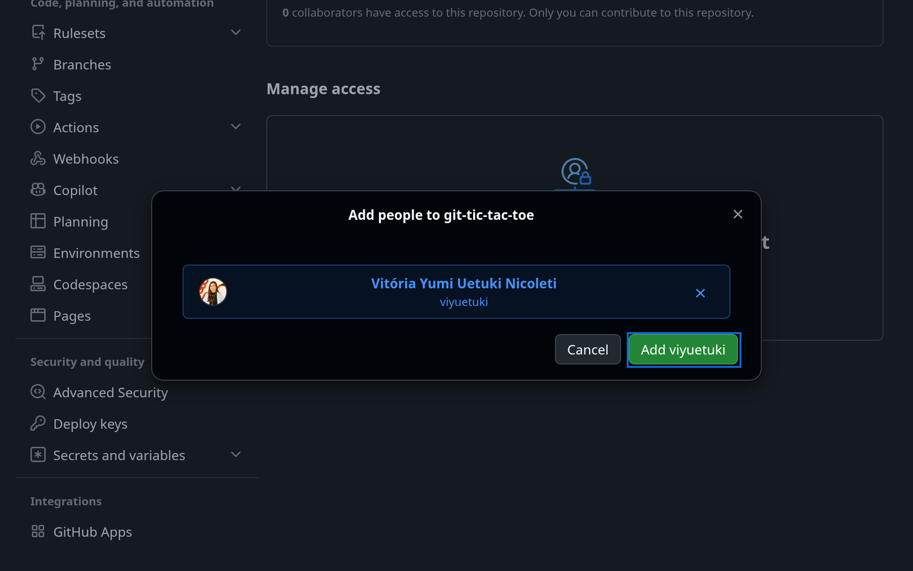
The Collaborators page shows the pending invite, with Awaiting their response and Pending Invite.
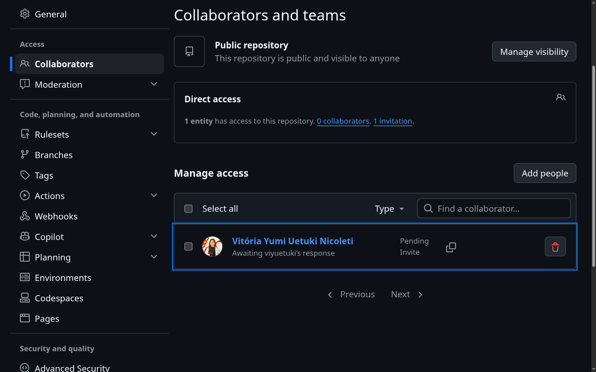
O (partner):
- Open the invitation email from GitHub, or look at github.com/notifications, or open the repository link X shares.
- Select Accept invitation. The invitation banner disappears and you now have write access, which means you can share changes to the repository.
No invitation?
- Check your spam folder, and that you can sign in to the email account linked to your GitHub account.
- X: check the spelling of the username you invited.
- X: paste the link
https://github.com/OWNER/REPO/invitations(with the real owner and repository names) into the chat. O opens it and selects Accept invitation. - Invitations expire after 7 days. If it expired, X removes the old invitation under Collaborators and invites again.
You will know it worked when your first Sync Changes succeeds.
Step 2: Start together
Start together: Choose one of your prepared repositories. Its owner plays X and moves first; the partner plays O and has accepted the invitation above. Each person opens the chosen repository in a separate Codespace. Once the partner has accepted, X uses Register repository in the header to register it once with both player GitHub handles.
Start the match: Both players switch to the existing match-01 branch in VS Code and pull using Source Control. Branches whose names start with lowercase match appear on the Game Wall as separate cards after a refresh finds them.
Click the branch name main in the status bar. That is the bottom-left branch button, not the Codespaces button. The board is the empty template and Source Control is clean.
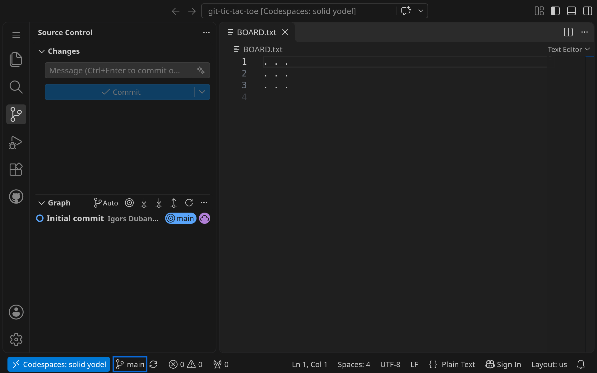
Select the existing match-01. origin/match-01 is the remote branch on GitHub; choosing it creates a local match-01 that tracks it. Do not choose Create new branch…. If it is missing, Fetch in Source Control, then open the picker again.
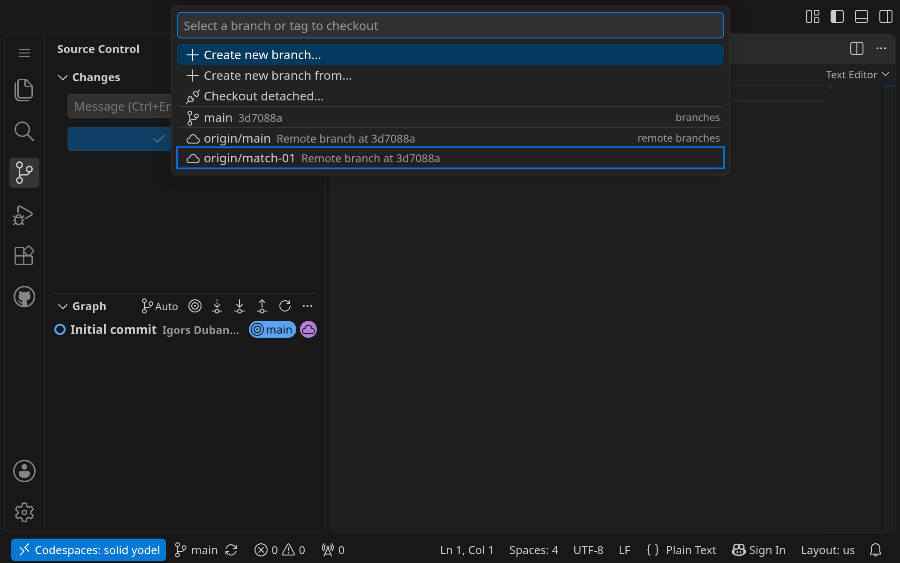
The status bar shows match-01. Both players should see this same empty BOARD.txt and a clean Source Control view. Then Pull in Source Control before the first move.
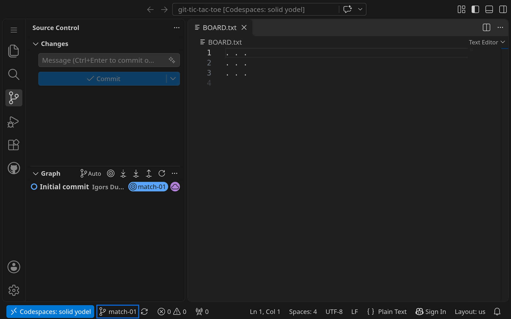
BOARD.txt has three rows of three cells, such as . . .. Replace one dot with your mark for each move.
- In VS Code’s Source Control view, Pull the latest change.
- Open
BOARD.txt, replace one dot (.) with your mark, and save it. If Auto Save is on, VS Code saves as you type; if it is off, save the file yourself. - Check the diff, then stage
BOARD.txtwith +. - Enter a clear message and Commit.
- Click Sync Changes. Tell your partner it is their turn; they pull before making their move.
In Source Control, open the ⋯ menu and select Pull. The menu covers the board; the graph shows the match-01 history.
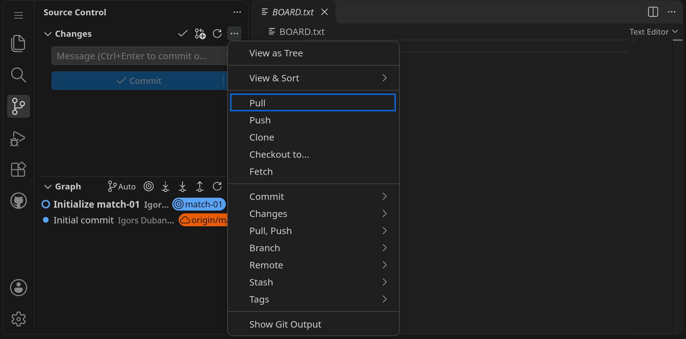
The new X is outlined in the bottom-right cell, so row 3 reads O . X. Auto Save is on, so this board is already saved: BOARD.txt shows M, not an unsaved dot. If Auto Save is off, save the file before you stage.
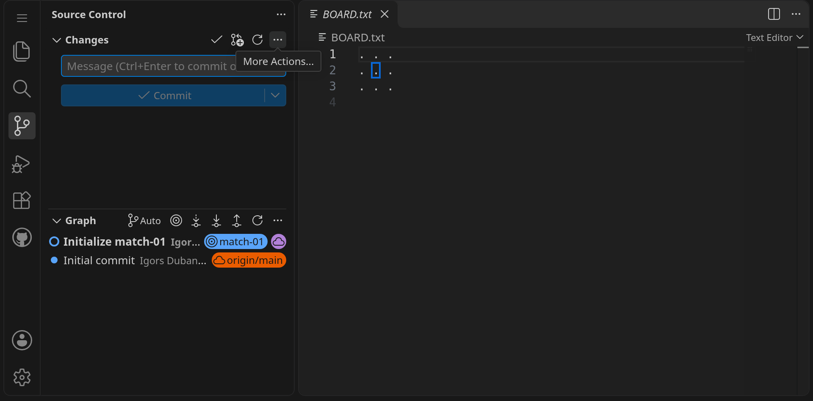
Under Changes, BOARD.txt is outlined and marked M. It is the same saved board as the previous picture.
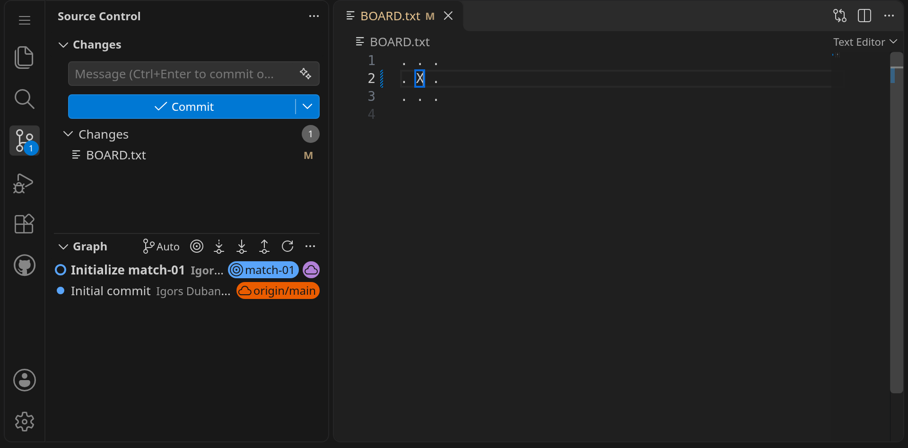
Stage BOARD.txt with +. The tooltip reads Stage Changes.
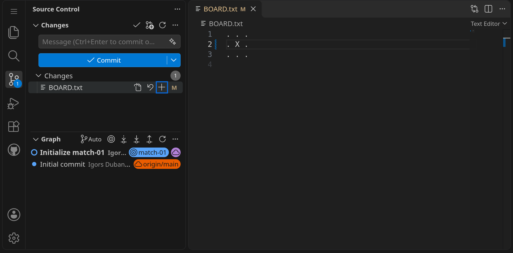
The board is under Staged Changes. The message X takes bottom-right is outlined; select Commit when you are ready.
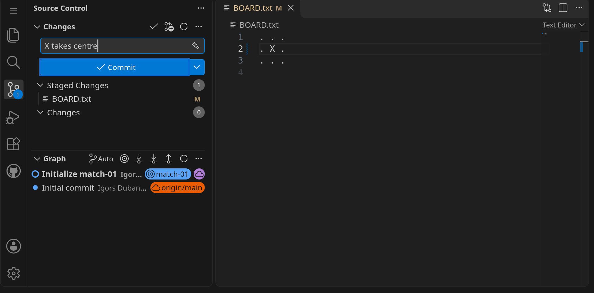
Sync Changes 1↑ is outlined and ready. The graph shows Outgoing Changes for the local commit X takes bottom-right. Select it when you are ready to share the move.
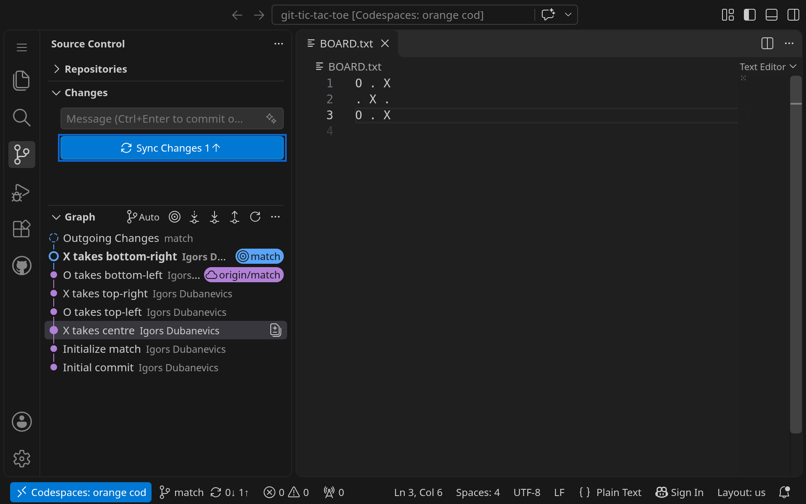
Your partner (O) now does the same steps in their own Codespace, starting with Pull.
Repeat the same steps until the match ends. A successful registration comment confirms the repository/workshop link; a card appears when a refresh finds a qualifying branch.
See the VS Code Source Control overview.
Rematch
Keep match-01 as it is. Switch to clean main, create a branch named match-02 from it, and publish the branch. Your partner fetches match-02, switches to it, and pulls before playing. If match-02 already exists, use the next unused name, such as match-03. The pictures show that case: the name box and status bar say match-03, created from main at 3d7088a, and Publish Branch is still available because the branch has not been published. Then follow the Ask, Agent, Plan progression in Using Copilot. In the instructor’s demonstration, select Agent mode and ask: “Place X in the center of the board.” If you play O or choose another square, name your mark and square.
Open the status-bar branch picker and select main (3d7088a). match-02 is already in the list.
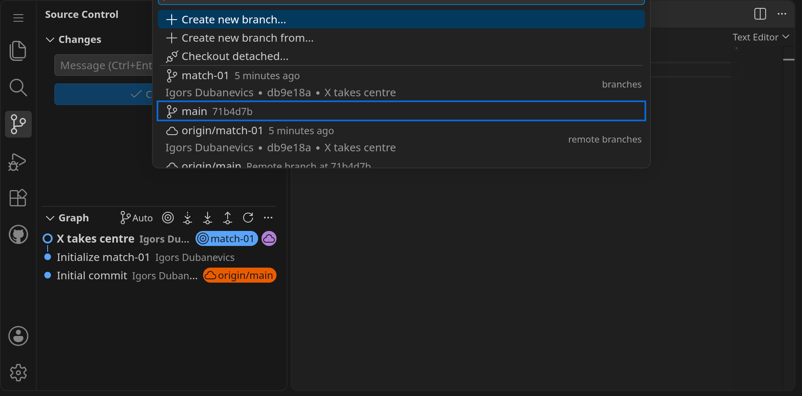
On main, choose Create new branch…. The status bar shows main.
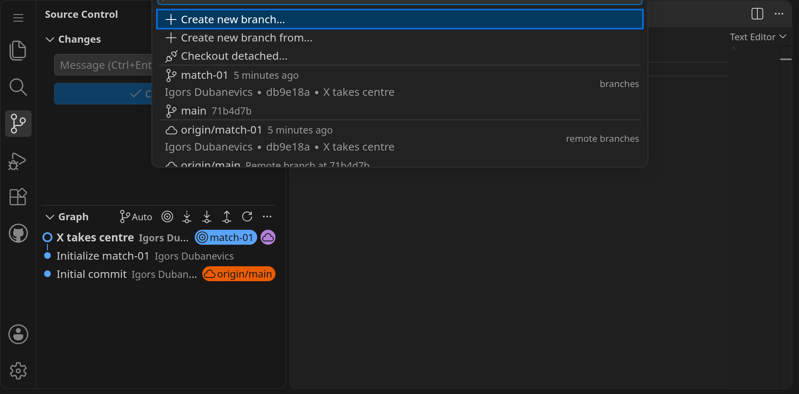
Name the next unused branch. match-02 is taken, so the box shows match-03. The status bar still shows main.
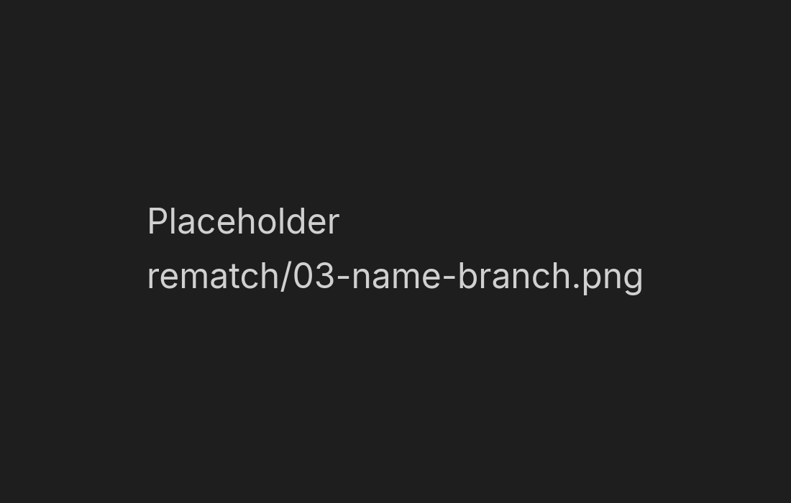
The status bar shows match-03. BOARD.txt is the empty template, and Publish Branch is ready because this branch is not published yet.
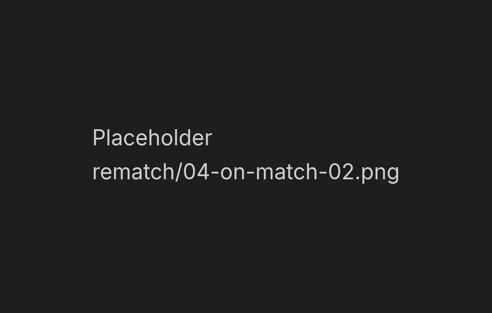
Now play exactly the same way as before.
- Review the proposed edit and inspect the diff to confirm it changes only your chosen cell.
- Only after that review, tell Copilot to commit and push, or stage with +, Commit and Sync Changes yourself.
- Your partner pulls before making their move.
If Copilot is unavailable to you, complete the rematch manually and follow the instructor’s Copilot demonstration. If its edit is wrong, undo the proposed edit and make the move manually.
Taking turns and fixing a conflict
Only one partner changes BOARD.txt at a time. Pull at the start of every turn, make your one move, Sync Changes, and tell your partner. Wait for them to pull before they move.
If Sync Changes is rejected or you see a conflict
A conflict means you and your partner changed the same line of BOARD.txt and Git cannot combine the two versions alone. Nothing is lost. Do not discard your partner’s move, and ask your facilitator if you are unsure.
- Stop editing. In Source Control, click Pull.
- Under Merge Changes, click
BOARD.txtto open the merge editor, the VS Code view that shows both versions side by side with the combined result below. - Talk with your partner and agree the board. Keep every move already published, then keep only one legal next move. Decide together who plays it now.
- Edit the result so
BOARD.txtis three rows of three cells, with no conflict markers left, then click Complete Merge. - Stage
BOARD.txtwith +, enter a clear message, and click Commit. - Click Sync Changes. Tell your partner to Pull and check the board before the next turn.
If you cannot agree on a legal board, stop and ask the facilitator. Do not force a change over your partner’s work.
Under Merge Changes, open BOARD.txt to see the conflict.
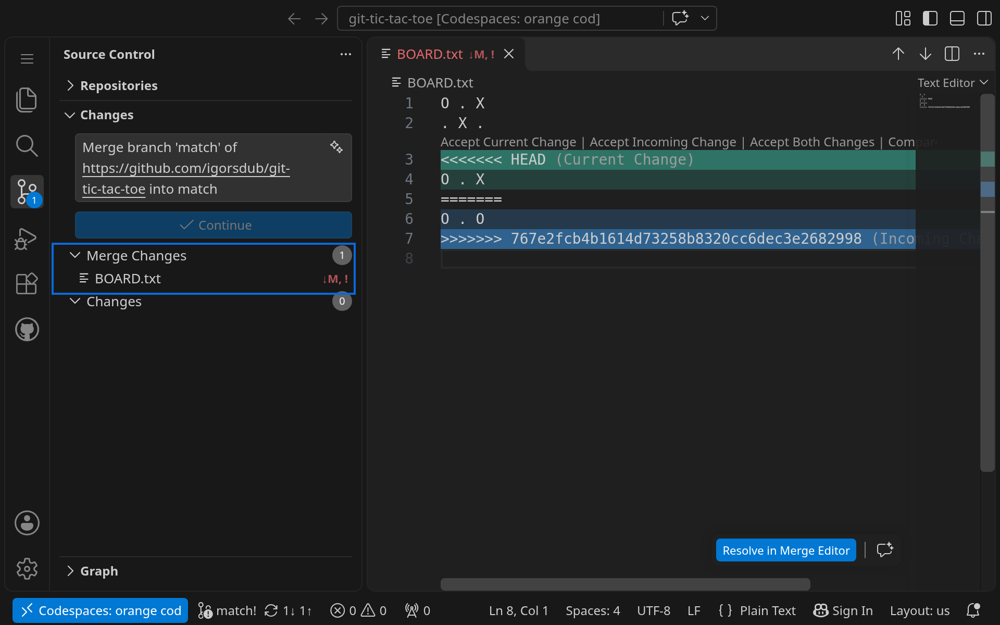
Use the merge editor to compare Incoming and Current with the Result below.
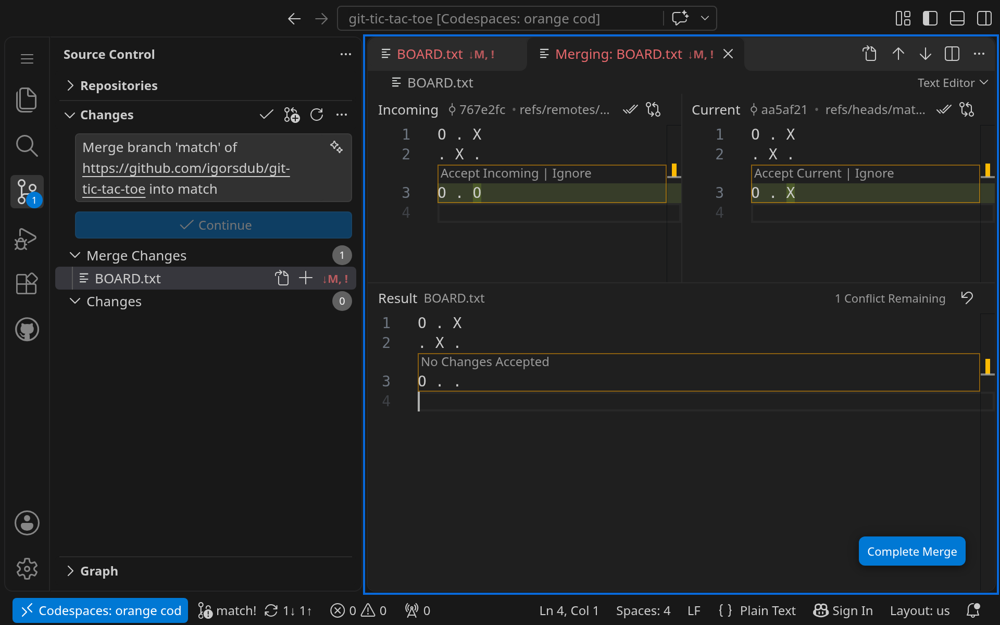
When the board is agreed and markers are gone, select Complete Merge.
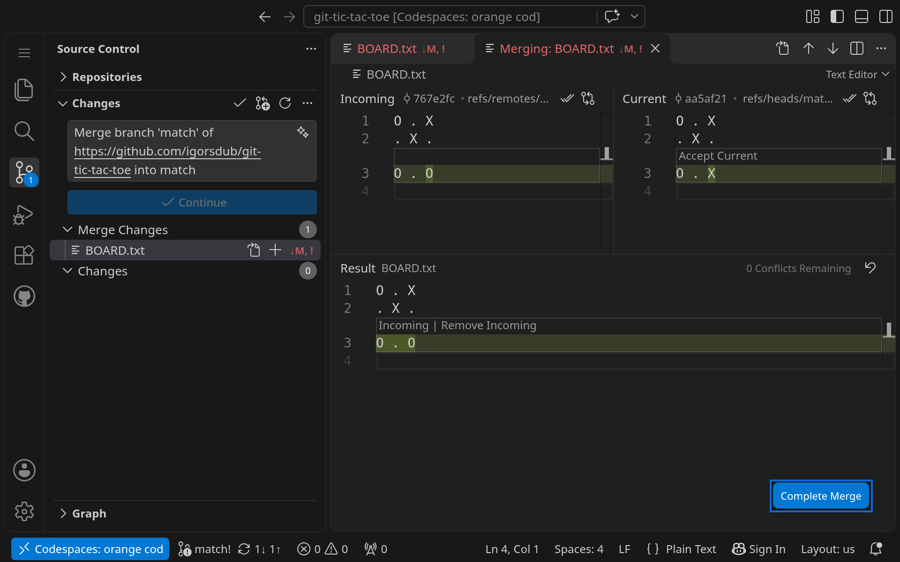
Stage if needed, Commit, then select Sync Changes 3↑.
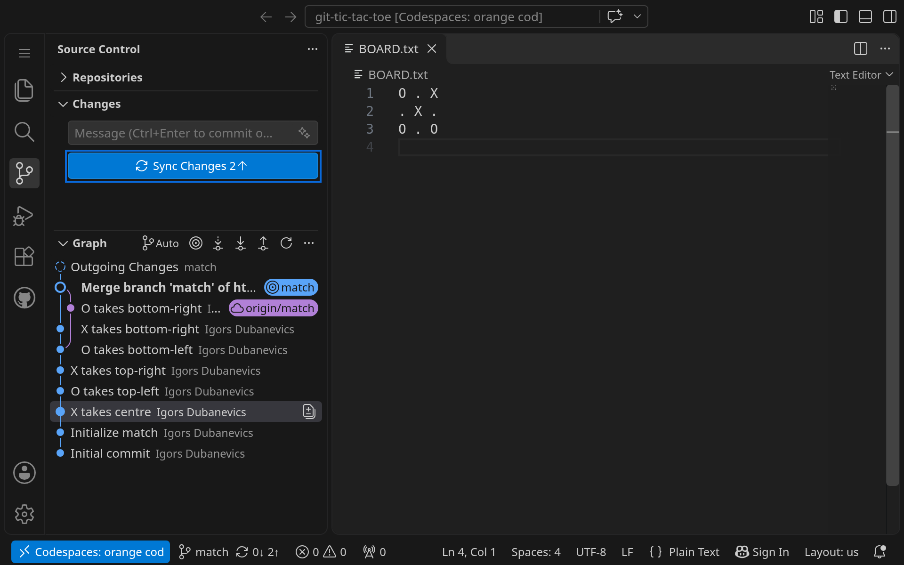
After the workshop you can explore your match history at your own pace on the Time machine page.
Using Copilot
Use Copilot only in the rematch, and only for one cell in BOARD.txt per move. Copilot commits or pushes only when you explicitly ask. It never merges, overwrites shared history or switches branches unasked. You still check every diff and commit. If the mode names differ in your VS Code, pick the chat option that explains only (Ask), edits and runs steps (Agent) or shows a plan first (Plan).
Ask mode
Get Copilot to explain the board while you place your mark and do every Git step by hand.
Explain the current board in BOARD.txt and whose turn it is.Open the mode picker. Interactive (“Step-by-step collaboration”) is the Ask-style explain-only mode.
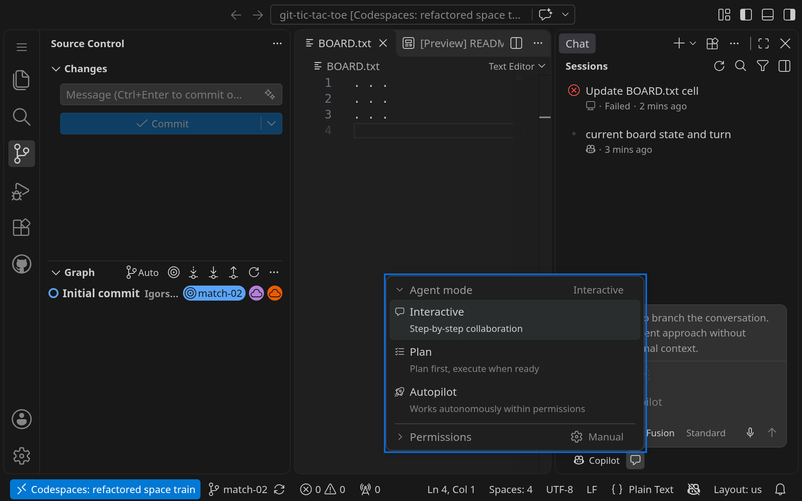
Read Copilot’s reply: the board is empty, so it is the first player’s turn (normally X).
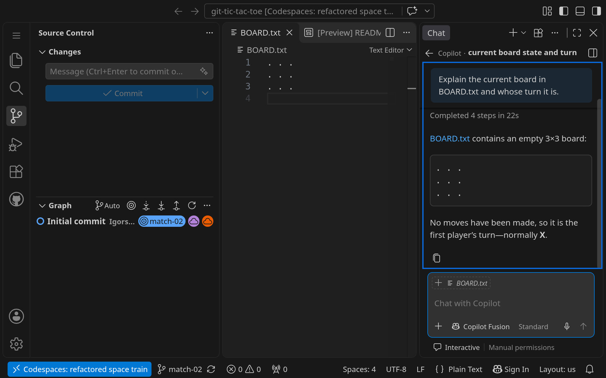
Agent mode
Let Copilot place one mark, then review the diff and tell it to commit and push.
Place O in the top-right cell of BOARD.txt. Change only that cell.In the chat input, type Place O in the top-right cell of BOARD.txt. Change only that cell.
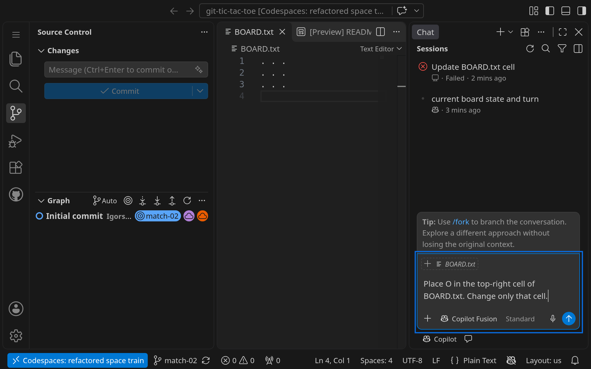
When the agent finishes, row 1 of BOARD.txt shows . . O. Review the diff and select Keep.
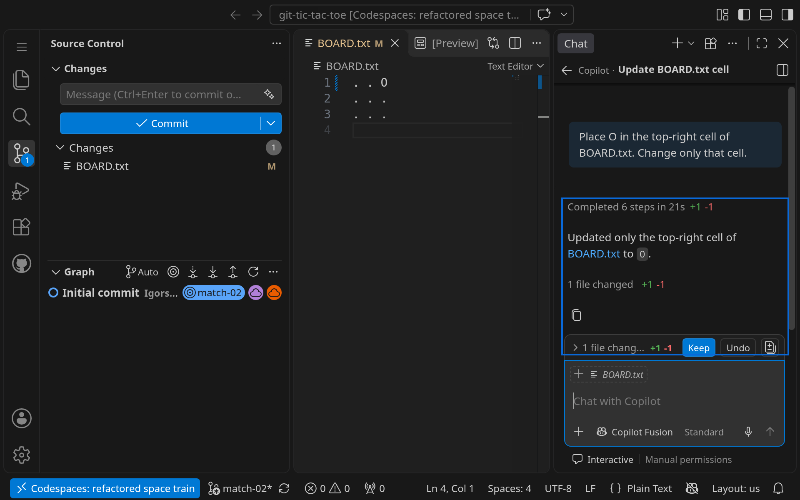
Commit this move with message 'O plays top-right' and push it.Plan mode
Give Copilot a short goal (pull, plan, place), approve its plan, review the diff, then send the commit prompt above as a separate request.
Pull, plan my next legal move as O, and place it. Then stop so I can review the diff.With Plan selected, type Pull, plan my next legal move as O, and place it. Then stop so I can review the diff.
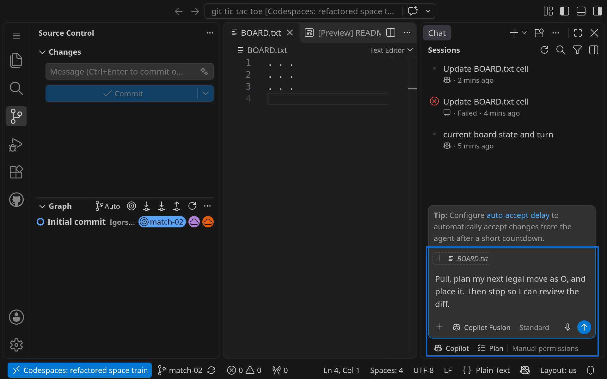
Terminal equivalent
Optional: the same steps in the terminal
The Source Control view above is the way we teach this workshop. These commands do the same things and are only for those who prefer the terminal.
# gameplay loop
git pull --no-rebase
# edit and save BOARD.txt, then check the change
git diff
git add BOARD.txt
git commit -m "X plays center"
git push
# conflict recovery
# if git push was rejected, pull first; if git status already says "Unmerged paths", skip the pull
git pull --no-rebase # reports a conflict in BOARD.txt
# edit BOARD.txt: agree the board with your partner, remove the <<<<<<< ======= >>>>>>> marker lines
git add BOARD.txt
git commit -m "Resolve board conflict"
git push
# switch to a match branch
git fetch
git switch match-01
# create and publish the rematch branch from clean main
git switch main
git switch -c match-02
git push -u origin match-02